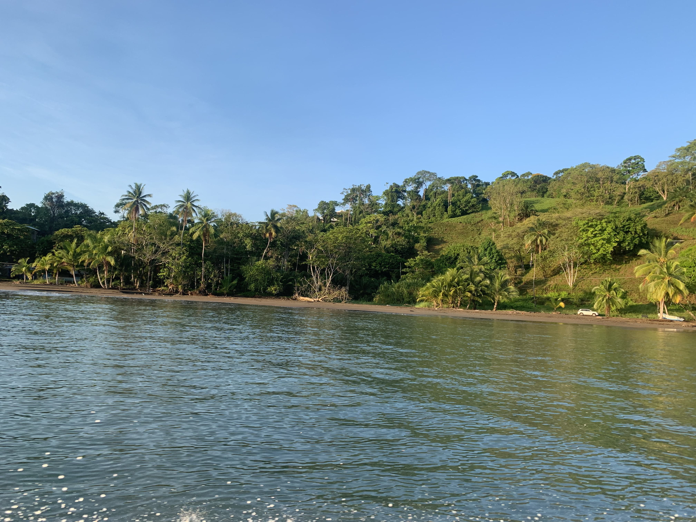
Sirena Beach
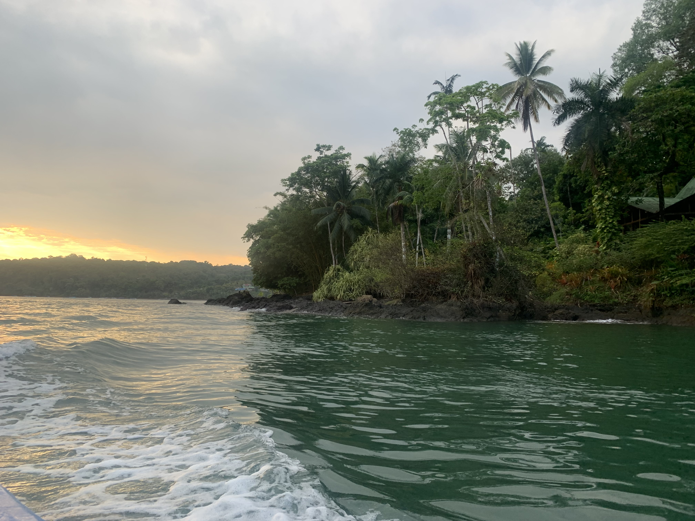
Bahia Drake
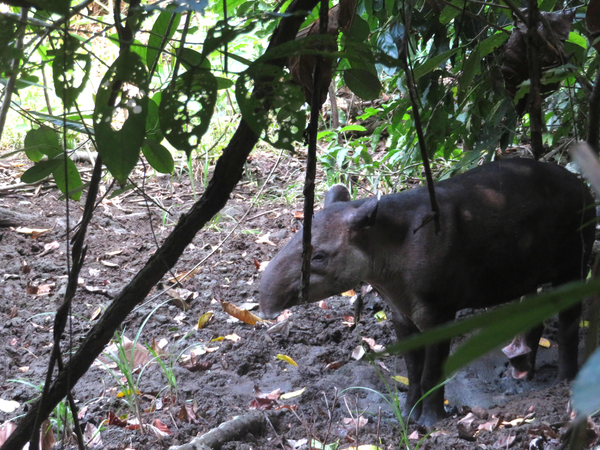
Massive Tapir

Rainforest
Corcovado National Park is located on the Osa Peninsula in the Southwestern part of Costa Rica, and is one of my favorite national parks in the entire world. The coast is absolutely beautiful, not to mention the hugely abundant wildlife that can be found that makes the park one of the most biodiverse places on Earth.

Sirena Beach

Bahia Drake

Massive Tapir
Rainforest
The 2hr boat ride from Drake Bay to the Sirena area of Corcovado is incredibly scenic, with plenty of stunning views of the coastal rainforest behind gorgeous gold and black sand beaches.
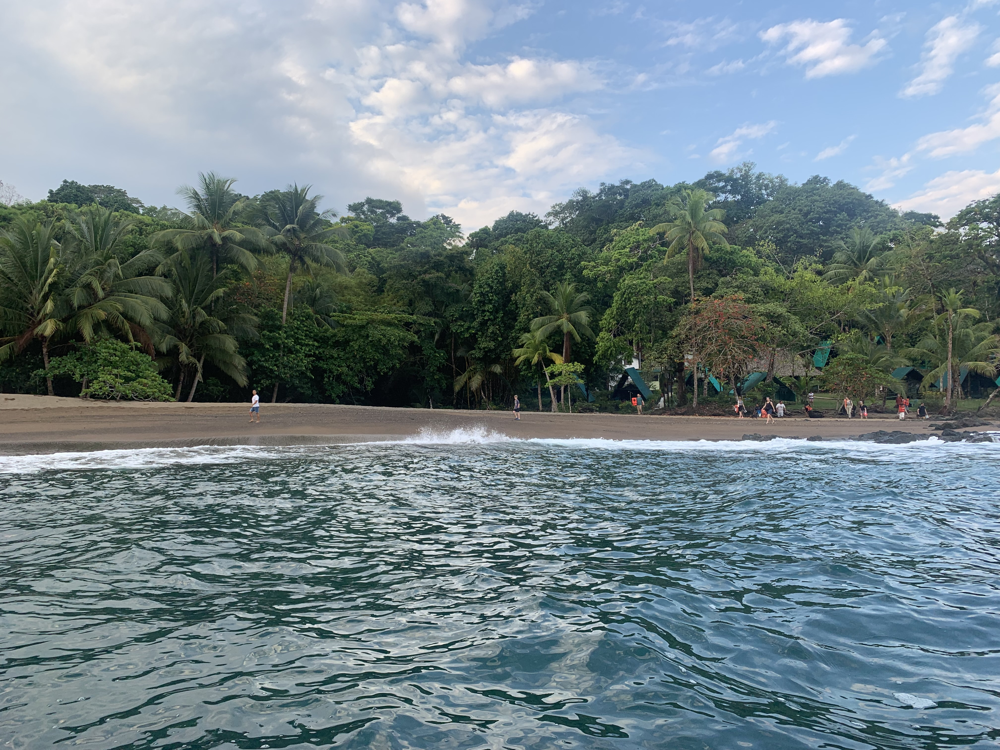
Drake Bay Beach
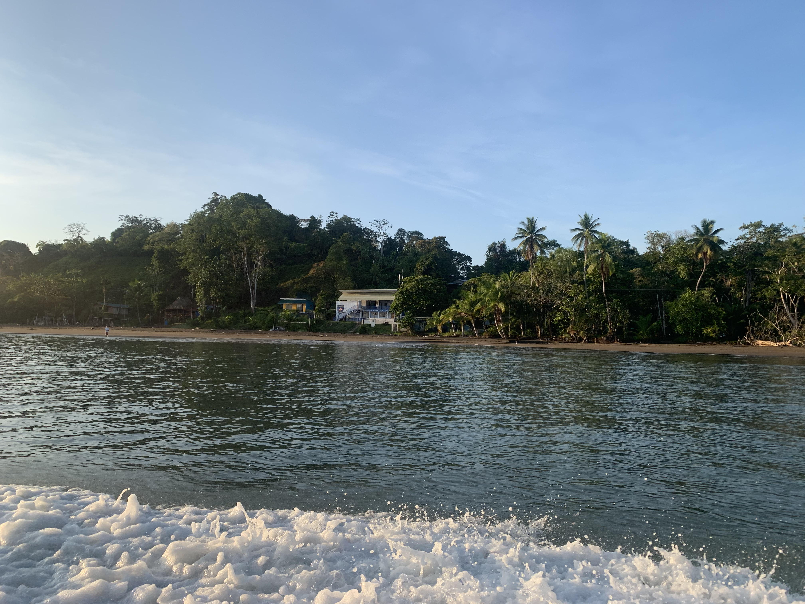
Playa Sirena
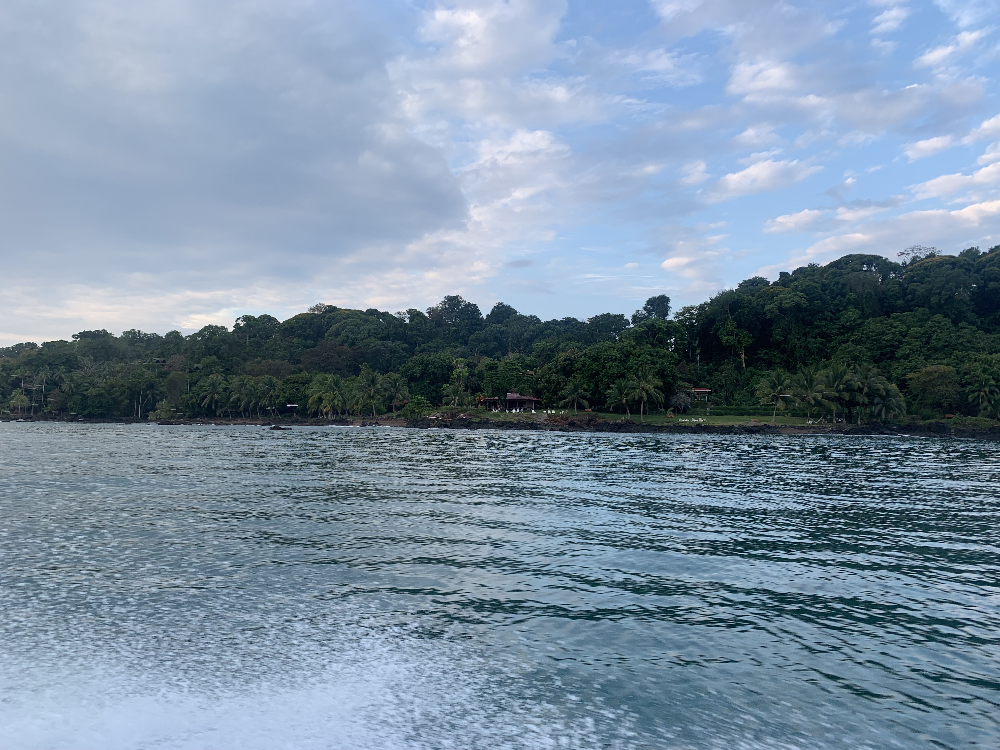
Bahia Drake
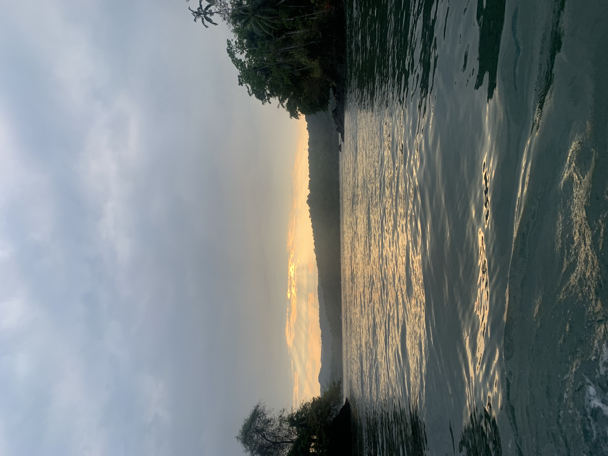
Bahia Drake
While the coastal rainforest scenery is stunning, the wildlife is the highlight of the park. So many animals call this place home, including the Tapir, the largest land mammal in Latin America and my favorite in the park. My best wildlife encounters were this huge Tapir relaxing in a mudhole near the trail and witnessing 2 tapirs swimming in the Sirena river, which were both fascinating to see in person. Aside from Tapirs, the next most abundant creature were Coatis, which were adorable and literally everywhere on the forest floor and even in the trees.

Massive Tapir
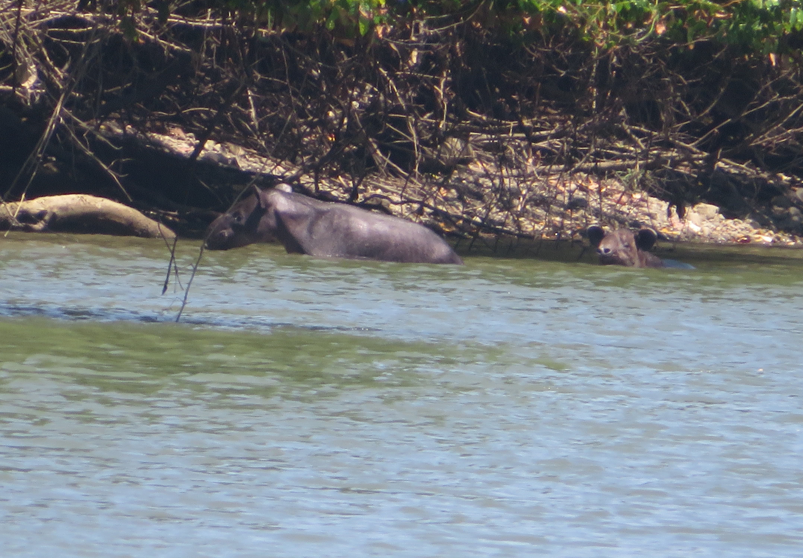
2 Tapirs swimming!

2 Coatis
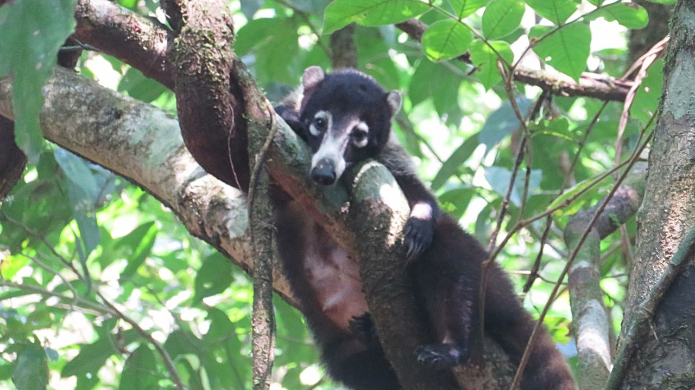
Coati in a tree

2 Coatis
Other cool wildlife I saw in Corcovado included Squirrel, Capuchin, Howler, and Spider Monkeys, which were my favorite as I got to see a mother Spider Monkey and her baby in the trees as well as a whole troop of them near the beach. I also got to see a 3-Toed Sloth relaxing in the canopy and Agoutis hanging out in the Corcovado rainforest floor. Corcovado is also the site of one of the rarest wildlife sightings I've ever had, which were these two anteaters having an all-out brawl on the side of the park trail, certainly one of the most epic things I've ever witnessed.
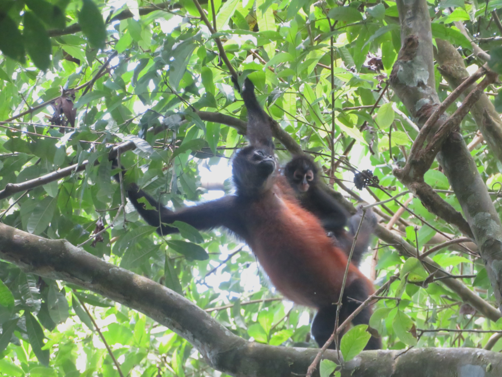
Spider Monkey & Baby
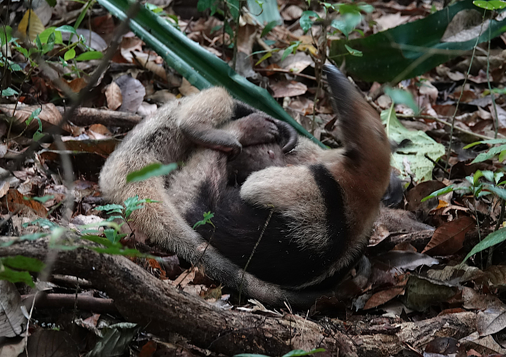
2 Anteaters

3-Toed Sloth

Spider Monkey

Spider Monkey
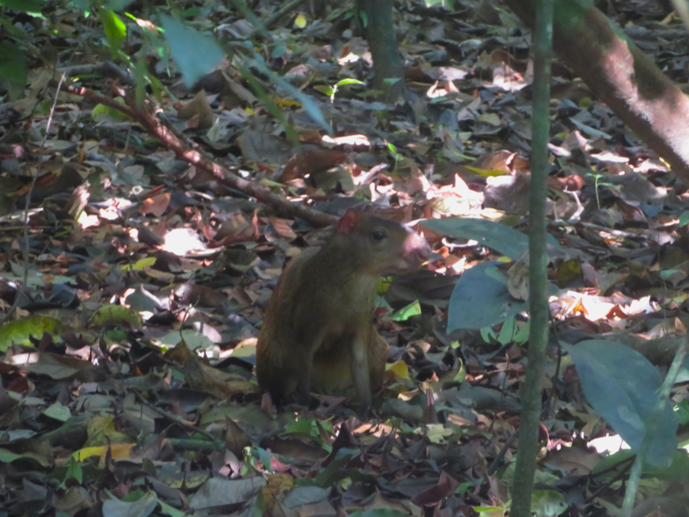
Agouti
Along with the huge amount of rainforest mammals, tons of birds, like beautiful Scarlet Macaws and toucans, as well as reptiles like lizards and iguanas call this spectacular park home.
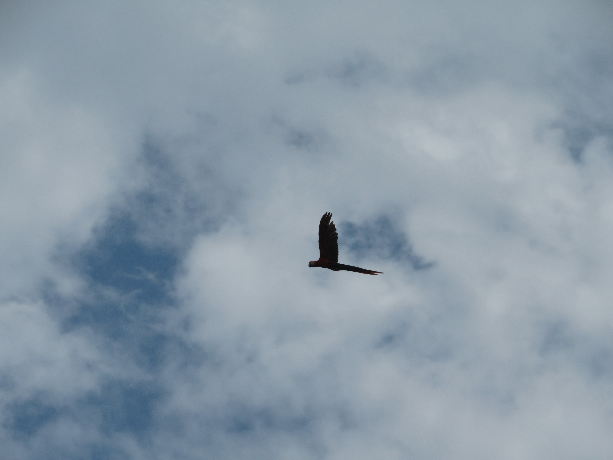
Scarlet Macaw

Lizards

Iguana
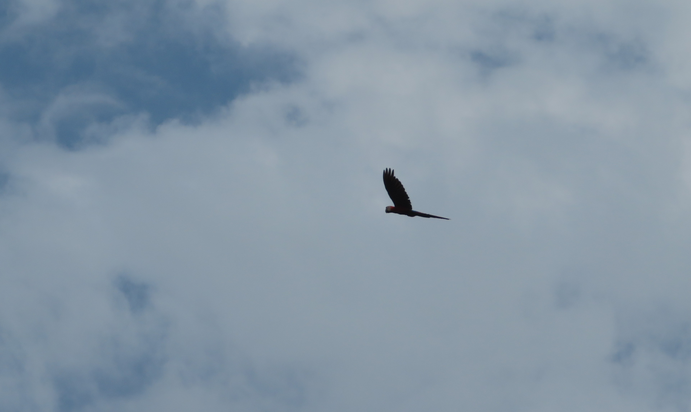
Scarlet Macaw